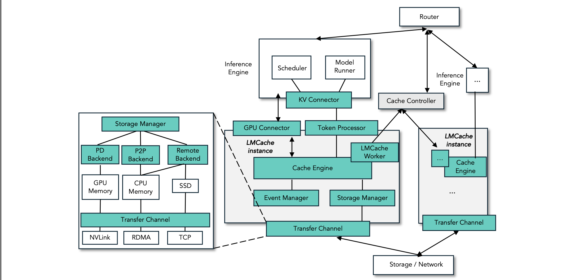
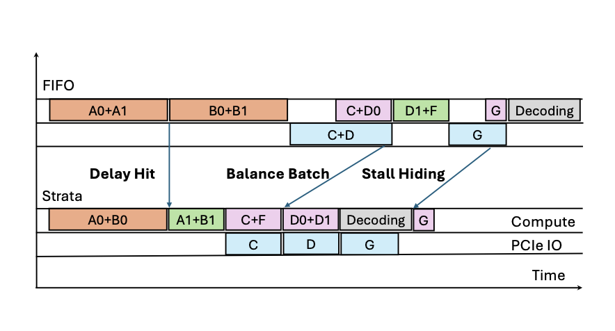
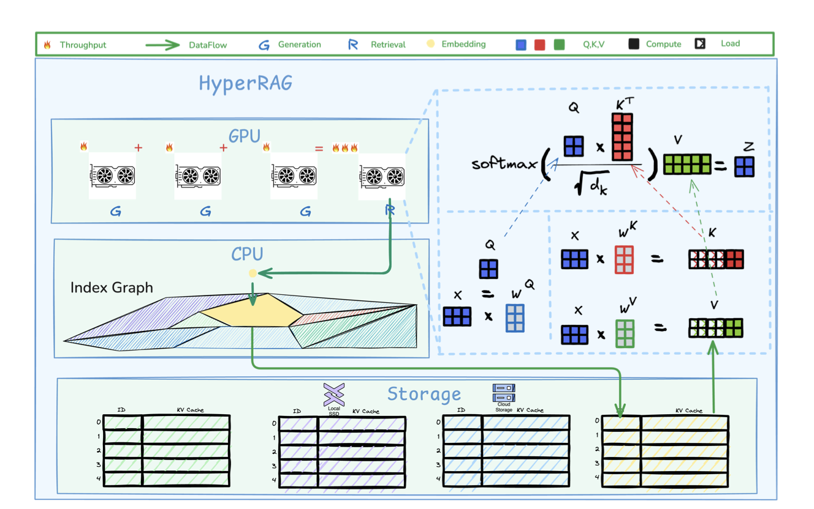
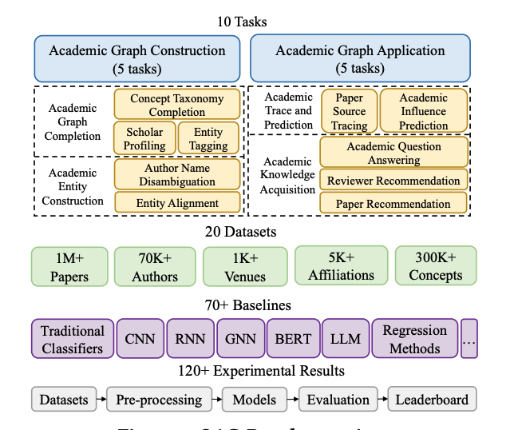
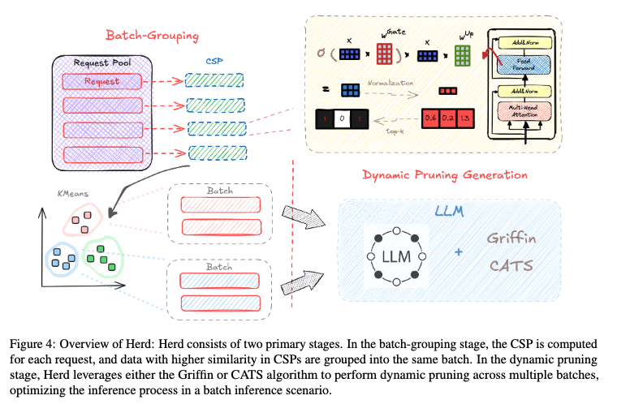
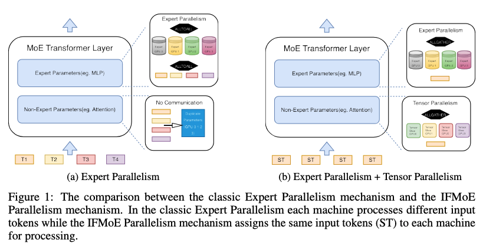
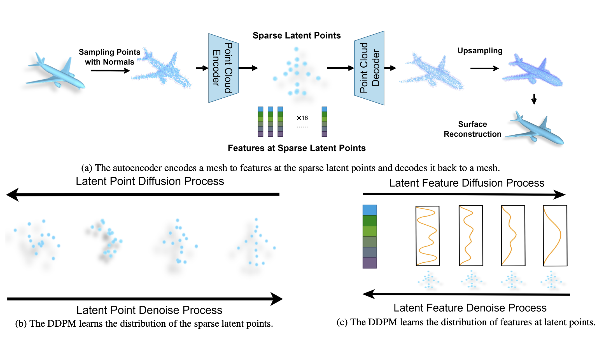

|
Yuwei An I'm a master student majoring Electrical and Computer Engineering at Carnegie Mellon University . Previously I got my Bachelor's Degree at Department of Computer Science and Technonlogy, Tsinghua University. Recently, I am an Intern working with Professor Beidi Chen, Professor Junchen Jiang, and Professor Ying Sheng. Previously, I was fortunate to work with Youyou Lu at THU and Bo Dai at AILab@Shanghai.
Email / CV / Github / Google Scholar |

|
Research InterestsMy primary research interest lies in Machine Learning Systems (MLSys), with a focus on both efficient model inference algorithms and system design for large language model (LLM) serving. On the algorithmic side, I am interested in developing efficient LLM inference algorithms, including but not limited to sparsity, parallel generation, and speculative decoding. On the system side, I focus on designing robust and high-performance LLM serving systems for both general and specialized serving scenarios. My work includes computation–I/O overlapping, scheduler design, Torch compilation, and kernel optimization. I am passionate about both research and engineering. On the research side, I focus on algorithm–system co-design for emerging applications such as reasoning, multi-agent inference, and mixture-of-experts (MoE) models. On the engineering side, I work on building reliable LLM serving systems and developing efficient offloading solutions. |
Publications
MLSys PaperList / Full PaperList. * denotes equal contribution.

|
Multiverse: Your Language Models Secretly Decide How to Parallelize and Merge Generation
Xinyu Yang*, Yuwei An*, Hongyi Liu, Tianqi Chen, Beidi Chen NeurIPS 2025 Spotlight paper / project page |
|
 |
LMCache: An Efficient KV Cache Layer for Enterprise-Scale LLM Inference
Yihua Cheng*, Yuhan Liu*, Jiayi Yao*, Yuwei An, Xiaokun Chen, Shaoting Feng, Yuyang Huang, Samuel Shen, Kuntai Du, Junchen Jiang paper / project page |
|
 |
Strata: Hierarchical Context Caching for Long Context Language Model Serving
Zhiqiang Xie, Ziyi Xu, Mark Zhao, Yuwei An, Vikram Sharma Mailthody, Scott Mahlke, Michael Garland, Christos Kozyrakis paper |
|
 |
HyperRAG: Enhancing Quality-Efficiency Tradeoffs in Retrieval-Augmented Generation with Reranker KV-Cache Reuse
Yuwei An, Yihua Cheng, Seo Jin Park, Junchen Jiang paper |
|
 |
OAG-Bench: A Human-Curated Benchmark for Academic Graph Mining
Fanjin Zhang, Shijie Shi, Yifan Zhu, Bo Chen, Yukuo Cen, Jifan Yu, Yelin Chen, Lulu Wang, Qingfei Zhao, Yuqing Cheng, Tianyi Han, Yuwei An, Dan Zhang, Weng Lam Tam, Kun Cao, Yunhe Pang, Xinyu Guan, Huihui Yuan, Jian Song, Xiaoyan Li, Yuxiao Dong, Jie Tang KDD 2024 paper |
|
 |
Herd: Grouping before Pruning for Batch Inference
Yuwei An, Zhuoming Chen, Chenyan Xiong, Beidi Chen paper |
|
 |
IFMoE: An Inference Framework Design for Fine-grained MoE
Yuwei An, Zhuoming Chen, Beidi Chen NeurIPS 2024 MLSys Workshop paper |
|
 |
Controllable Mesh Generation Through Sparse Latent Point Diffusion Models
Zhaoyang Lyu*, Jinyi Wang*, Yuwei An, Ya Zhang, Dahua Lin, Bo Dai CVPR 2023 paper |
Open Source Projects |

|
SGLang
project website / feature documentation SGLang is a high-performance serving framework for large language models and vision-language models. Lead the torch compilation backend and piecewise cuda graph support for SGLang, which achieves better prefilling performance for various input lengths. |
|
LMCache
project website / feature documentation LMCache is a LLM serving engine extension to reduce TTFT and increase throughput, especially under long-context scenarios. Lead the integration of LMCache into SGLang. Build layerwise offloading solution to achieve computation-io overlapping for kv cache storage support on cpu and remote backend. |
Teaching & Service |
|
Teaching Assistant: CMU 18789 Deep Generative Modeling
website TA for 18-789 Deep Generative Modeling in Spring 2025. Instructor: Beidi Chen |
|
|
SIGCOMM 2025 Tutorial: Networking for Stateful LLM Inference
website Tutorial for topic: Implement a Simple KV Cache Compression Algorithm in LMCache |
|
This is the source code from Jon Barron. Thanks to him for sharing this beautiful template! |